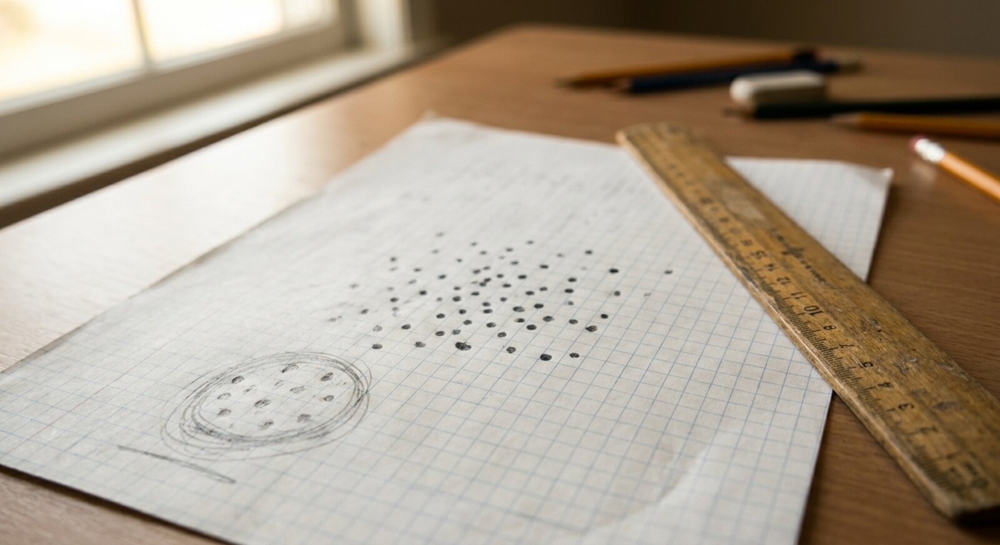

library(palmerpenguins)
library(tidyverse)
library(broom)
library(caret)
library(randomForest)
library(knitr)
library(patchwork)
theme_set(theme_minimal(base_size = 12))
penguin_colors <- c(
"Adelie" = "#FF6B6B",
"Chinstrap" = "#4ECDC4",
"Gentoo" = "#45B7D1"
)
data(penguins)
penguins_clean <- penguins |> drop_na()Palmer Penguins Part 3: Cross-Validation and Model Comparison
r
cross-validation
random-forest
machine-learning
penguins-arc
Testing whether regression models hold up on new data through ten-fold cross-validation and comparison against a random forest.
Palmer Penguins series, Part 3. Photo used under open license.
Introduction
Do the regression models developed in Parts 1 and 2 hold up on new data? In Part 2, an R-squared of 0.863 was achieved by incorporating species information, but that number was computed on the same data used to fit the model. Training-set performance can be misleading, and a more honest estimate is needed.
The problem is familiar to anyone who has built a predictive model: the training metrics look excellent, but there is no evidence that the model will generalize. Cross-validation offers a principled way to estimate out-of-sample performance without requiring a separate hold-out dataset, which would have been difficult to justify given our modest sample of 333 penguins.
We walk through the cross-validation framework, test whether polynomial features add value, and pit the linear model against a random forest to see whether the additional complexity buys meaningful improvement.
Motivations
The following considerations motivated this analysis:
- An honest performance estimate that does not rely on the same data used for model fitting.
- Curiosity about whether adding polynomial terms would capture non-linear biological relationships that a straight line might miss.
- Testing the claim that random forests often outperform linear models on ecological data.
- A systematic framework for comparing models on equal footing, using the same folds and the same evaluation metric.
- Quantifying the uncertainty around performance estimates with proper confidence intervals.
- Developing a reusable cross-validation workflow applicable to future datasets.
Objectives
- Implement ten-fold cross-validation for the three linear models developed in Parts 1 and 2 and report RMSE and R-squared with confidence intervals.
- Fit a polynomial regression to test whether quadratic terms improve cross-validated performance.
- Train a random forest on the same data and compare its cross-validated metrics against the linear models.
- Rank all four models and determine whether the additional complexity of machine learning yields a meaningful gain over the species-aware linear model.
Errors and better approaches are welcome; see the Feedback section at the end.

Visual interlude before the technical content.
Prerequisites and Setup
This analysis requires several R packages. The caret package provides a unified interface for cross-validation, and randomForest supplies the ensemble learner we test against our linear models.
We carry forward the three models from Parts 1 and 2 so that cross-validation results are directly comparable to the training-set metrics reported earlier.
What is Cross-Validation?
Cross-validation is a resampling technique that estimates how well a model will perform on data it has not seen during training. Instead of fitting the model once on the entire dataset, we partition the data into k equally sized folds, train on k-1 folds, and evaluate on the held-out fold. Repeating this process for each fold produces k performance estimates whose average is a less biased measure of generalization error than the training-set metric alone.
Think of it as giving each observation a turn as the “test case.” If the model performs consistently across all ten folds, we gain confidence that the reported R-squared is not an artifact of the particular sample we happened to collect. If performance varies widely across folds, that signals instability, a warning that the model may not generalize.
Getting Started
Reconstructing the Baseline Models
We recreate the three models from the earlier parts so that they can be passed through the same cross-validation pipeline.
simple_model <- lm(
body_mass_g ~ flipper_length_mm,
data = penguins_clean
)
multiple_model <- lm(
body_mass_g ~ bill_length_mm + bill_depth_mm +
flipper_length_mm,
data = penguins_clean
)
species_model <- lm(
body_mass_g ~ bill_length_mm + bill_depth_mm +
flipper_length_mm + species,
data = penguins_clean
)A quick check of training-set performance confirms the numbers we reported previously.
baseline_summary <- tibble(
Model = c("Simple", "Multiple", "Species"),
R_squared = c(
glance(simple_model)$r.squared,
glance(multiple_model)$r.squared,
glance(species_model)$r.squared
)
)
kable(
baseline_summary,
digits = 3,
col.names = c("Model", "R-squared (training)"),
caption = "Training-set R-squared for the three
linear models from Parts 1 and 2."
)These numbers represent an upper bound because the model has already “seen” all observations. Cross- validation will provide a more realistic estimate.
Setting Up Ten-Fold Cross-Validation
set.seed(42)
train_control <- trainControl(
method = "cv",
number = 10,
savePredictions = "final",
verboseIter = FALSE
)Using set.seed(42) ensures that anyone who runs this code will obtain the same fold assignments and therefore the same results.
Cross-Validating the Linear Models
cv_simple <- train(
body_mass_g ~ flipper_length_mm,
data = penguins_clean,
method = "lm",
trControl = train_control
)
cv_multiple <- train(
body_mass_g ~ bill_length_mm + bill_depth_mm +
flipper_length_mm,
data = penguins_clean,
method = "lm",
trControl = train_control
)
cv_species <- train(
body_mass_g ~ bill_length_mm + bill_depth_mm +
flipper_length_mm + species,
data = penguins_clean,
method = "lm",
trControl = train_control
)The train() function from caret handles the fold creation, iterative fitting, and metric aggregation in a single call. Each model is evaluated on ten distinct held-out subsets.
cv_linear_results <- tibble(
Model = c("Simple", "Multiple", "Species"),
RMSE = c(
cv_simple$results$RMSE,
cv_multiple$results$RMSE,
cv_species$results$RMSE
),
R_squared = c(
cv_simple$results$Rsquared,
cv_multiple$results$Rsquared,
cv_species$results$Rsquared
),
R2_lower = c(
quantile(cv_simple$resample$Rsquared, 0.025),
quantile(cv_multiple$resample$Rsquared, 0.025),
quantile(cv_species$resample$Rsquared, 0.025)
),
R2_upper = c(
quantile(cv_simple$resample$Rsquared, 0.975),
quantile(cv_multiple$resample$Rsquared, 0.975),
quantile(cv_species$resample$Rsquared, 0.975)
)
)
kable(
cv_linear_results,
digits = 3,
col.names = c(
"Model", "RMSE (g)", "R-squared",
"R2 lower 95%", "R2 upper 95%"
),
caption = "Ten-fold cross-validation results for
the three linear models."
)The species model maintains strong cross-validated performance with an R-squared confidence interval that sits well above the other two models. The narrow interval suggests stable generalization across folds.

Midpoint pause before the model comparison.
Polynomial Features
A natural question is whether the relationships between morphometric measurements and body mass contain curvature that a straight line cannot capture. We test this by adding second-degree polynomial terms for each continuous predictor while retaining the species indicator.
cv_poly <- train(
body_mass_g ~ poly(flipper_length_mm, 2) +
poly(bill_length_mm, 2) +
poly(bill_depth_mm, 2) + species,
data = penguins_clean,
method = "lm",
trControl = train_control
)
poly_comparison <- tibble(
Model = c("Species (linear)", "Polynomial"),
RMSE = c(
cv_species$results$RMSE,
cv_poly$results$RMSE
),
R_squared = c(
cv_species$results$Rsquared,
cv_poly$results$Rsquared
)
)
kable(
poly_comparison,
digits = 3,
col.names = c("Model", "RMSE (g)", "R-squared"),
caption = "Linear versus polynomial
cross-validation performance."
)The polynomial model provides only a marginal reduction in RMSE, indicating that the biological relationships between morphometric predictors and body mass are well described by linear terms within each species group. The added complexity of quadratic terms does not justify the increased risk of overfitting.
Random Forest Comparison
Random forests aggregate predictions from hundreds of decision trees, each trained on a bootstrap sample of the data with a random subset of predictors considered at each split. Because the algorithm makes no assumptions about linearity, it can capture interactions and non-linear patterns that a linear model might miss.
set.seed(123)
cv_rf <- train(
body_mass_g ~ bill_length_mm + bill_depth_mm +
flipper_length_mm + species + sex + island,
data = penguins_clean,
method = "rf",
trControl = train_control,
ntree = 500
)Note that the random forest uses all available predictors, including sex and island, giving it every opportunity to outperform the linear model.
rf_importance <- varImp(cv_rf)$importance |>
rownames_to_column("Variable") |>
arrange(desc(Overall)) |>
head(5)
kable(
rf_importance,
digits = 1,
col.names = c("Variable", "Importance"),
caption = "Top five variable importance scores
from the random forest."
)The random forest identifies flipper length and sex as the most important predictors, which aligns with the biological intuition from our earlier linear modeling.
Model Performance Summary
final_ranking <- tibble(
Model = c(
"Simple", "Multiple", "Species",
"Polynomial", "Random Forest"
),
RMSE = c(
cv_simple$results$RMSE,
cv_multiple$results$RMSE,
cv_species$results$RMSE,
cv_poly$results$RMSE,
min(cv_rf$results$RMSE)
),
R_squared = c(
cv_simple$results$Rsquared,
cv_multiple$results$Rsquared,
cv_species$results$Rsquared,
cv_poly$results$Rsquared,
max(cv_rf$results$Rsquared)
)
) |>
arrange(RMSE)
kable(
final_ranking,
digits = 3,
col.names = c(
"Model", "RMSE (g)", "R-squared"
),
caption = "Final cross-validated performance
ranking across all five models."
)The random forest edges out the linear species model by a small margin in RMSE, but the improvement is modest relative to the loss of interpretability. The species-aware linear model remains the best trade-off between performance and transparency.
Practical Application
new_penguins <- data.frame(
species = c("Adelie", "Chinstrap", "Gentoo"),
flipper_length_mm = c(190, 195, 220),
bill_length_mm = c(39, 48, 47),
bill_depth_mm = c(18, 17, 15)
)
predictions <- predict(
species_model,
newdata = new_penguins,
interval = "prediction",
level = 0.95
)
pred_table <- bind_cols(
new_penguins |> select(species),
as_tibble(predictions)
) |>
rename(
Species = species,
Predicted = fit,
Lower = lwr,
Upper = upr
)
kable(
pred_table,
digits = 0,
caption = "Predicted body mass with 95% prediction
intervals for three hypothetical penguins."
)The prediction intervals are reasonably narrow, reflecting the model’s strong explanatory power, yet wide enough to acknowledge genuine biological variation within each species.
Things to Watch Out For
Fold imbalance. If the species distribution is uneven and the folds are created by simple random sampling, some folds may contain very few Chinstrap penguins. Stratified sampling mitigates this risk.
Seed sensitivity. Different random seeds produce different fold assignments and therefore slightly different results. Reporting results from a single seed is acceptable for exploratory work, but repeated cross-validation provides a more stable estimate.
Metric selection. RMSE penalises large errors more heavily than MAE. The choice of metric should reflect the research question. If all errors matter equally, MAE may be more appropriate.
Data leakage. Pre-processing steps such as centering and scaling must be performed within each fold, not on the entire dataset before splitting. The
caretframework handles this when pre-processing is specified insidetrain().Overfitting polynomial terms. High-degree polynomials can fit training data perfectly while degrading out-of-sample performance. Cross- validation is the safeguard against this, but the analyst must still interpret the results critically.
Closing visual before the summary sections.
Lessons Learned
Conceptual Understanding
- Cross-validated R-squared for the species model (approximately 0.86) closely matched the training-set estimate, indicating minimal overfitting.
- Polynomial terms added negligible predictive power, suggesting that within-species relationships are essentially linear for these morphometric variables.
- The random forest achieved only a modest improvement over the linear model despite having access to additional predictors (sex and island).
- The bias-variance tradeoff is visible in these results: more complex models do not always generalize better.
Technical Skills
- The
caretpackage provides a unified interface for cross-validation that works identically across model types, fromlmtorf. - Setting
savePredictions = "final"intrainControlstores per-fold predictions, which are valuable for diagnostic plots. - Variable importance from
varImp()offers a model-agnostic way to rank predictors regardless of the underlying algorithm. - Confidence intervals on R-squared can be constructed from the per-fold resampling distribution using
quantile().
Gotchas and Pitfalls
- Forgetting
set.seed()beforetrainControlleads to irreproducible fold assignments and makes debugging difficult. - The
caretpackage masksdplyr::trainif both are loaded; loading order matters or use explicit namespacing. - Random forest training on even a modest dataset (333 rows, 500 trees) takes noticeably longer than linear regression; plan accordingly for larger datasets.
- Cross-validation does not protect against problems in the data itself, such as measurement error or non-representative sampling.
Limitations
- The dataset contains only 333 complete observations, which limits the precision of per-fold estimates in ten-fold cross-validation.
- Geographic scope is restricted to Palmer Station, Antarctica, and may not generalize to penguin populations elsewhere.
- The temporal window spans only 2007 to 2009; longer-term trends are not captured.
- Species representation is unequal, which may bias cross-validation performance toward the majority class (Adelie).
- Environmental covariates such as temperature, prey availability, and nesting site are absent from the model.
- The random forest was given additional predictors (sex and island) not available to the linear models, making the comparison slightly uneven.
Opportunities for Improvement
- Implement stratified cross-validation to ensure balanced species representation in every fold.
- Use repeated cross-validation (e.g., 10-fold repeated 5 times) to obtain more stable performance estimates.
- Explore gradient-boosted trees (e.g.,
xgboost) as a third modeling paradigm. - Add interaction terms between species and continuous predictors to the linear model, which may close the gap with the random forest.
- Incorporate external environmental data to test whether ecological context improves predictions.
- Apply nested cross-validation to tune random forest hyperparameters without introducing optimistic bias.
Wrapping Up
This analysis confirms that the species-aware linear model from Part 2 generalizes well to unseen data. Ten-fold cross-validation produced an R-squared of approximately 0.86, closely matching the training-set figure and indicating minimal overfitting.
The main surprise was how little the more complex models contributed. Polynomial features added negligible predictive power, and the random forest improved RMSE by only a small margin despite having access to more predictors. For an ecological dataset of this size, the additional complexity of ensemble methods does not appear to be justified.
A recommendation for anyone working through a similar modeling exercise: always cross-validate before drawing conclusions about model quality, and do not assume that a more complex model will outperform a simpler one.
In conclusion, four points merit emphasis. First, a cross-validated R-squared of approximately 0.86 confirms that the species-aware model generalizes robustly to held-out data. Second, polynomial features yield negligible improvement over linear terms within species, indicating that the biological relationships are adequately captured by straight lines. Third, random forests offer only marginal gains at the cost of interpretability, making the additional complexity difficult to justify. Fourth, the species-aware linear model remains the recommended choice for this dataset, offering strong performance alongside transparent and auditable coefficients.
See Also
Series posts:
- Part 1: EDA and Simple Regression
- Part 2: Multiple Regression and Species Effects
- Part 4: Model Diagnostics and Interpretation
- Part 5: Random Forest vs Linear Models
Key resources:
- Kuhn, M. (2008). Building predictive models in R using the caret package. Journal of Statistical Software, 28(5).
- James, G., Witten, D., Hastie, T., & Tibshirani, R. (2021). An Introduction to Statistical Learning (2nd ed.). Springer. https://www.statlearning.com
- Horst, A. M., Hill, A. P., & Gorman, K. B. (2020). palmerpenguins: Palmer Archipelago (Antarctica) penguin data. R package. https://allisonhorst.github.io/palmerpenguins/
- Breiman, L. (2001). Random Forests. Machine Learning, 45(1), 5-32.
Reproducibility
Data source: palmerpenguins R package (built-in dataset, no external download required).
Pipeline commands:
Rscript analysis/scripts/01_prepare_data.R
Rscript analysis/scripts/02_fit_models.R
Rscript analysis/scripts/03_generate_figures.R
quarto render index.qmdSession information:
Feedback
Feedback is welcome for:
- Errors or better approaches to any of the code in this post
- Suggestions for topics to cover in future posts
- Discussion of cross-validation methodology or model comparison
- Questions about anything in this tutorial
- General discussion of predictive modeling for ecological data